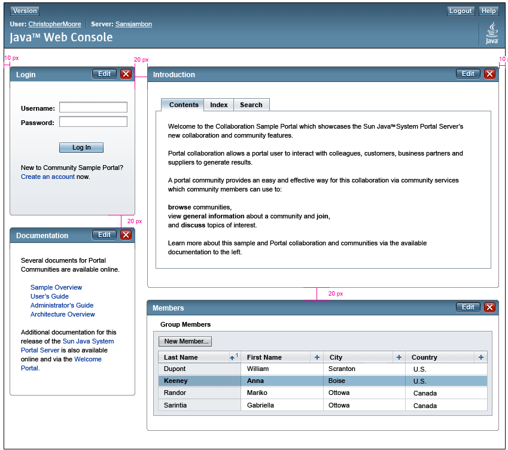
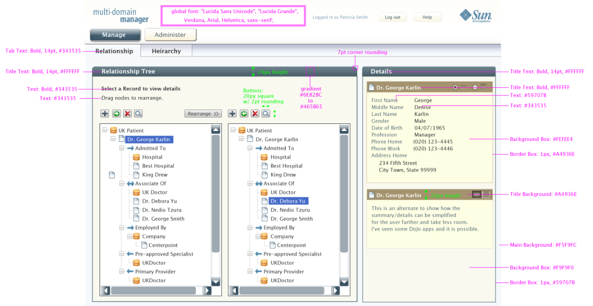
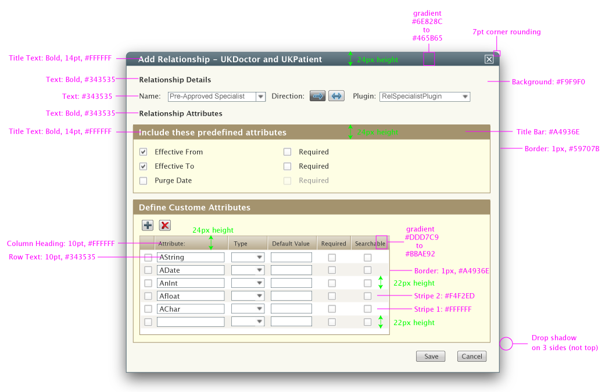
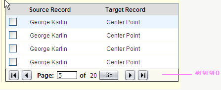
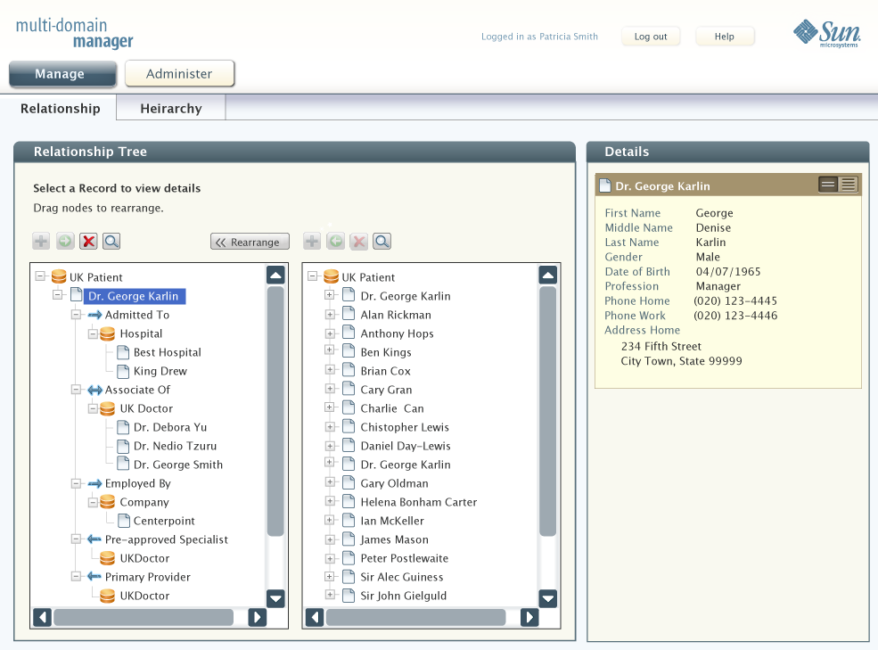
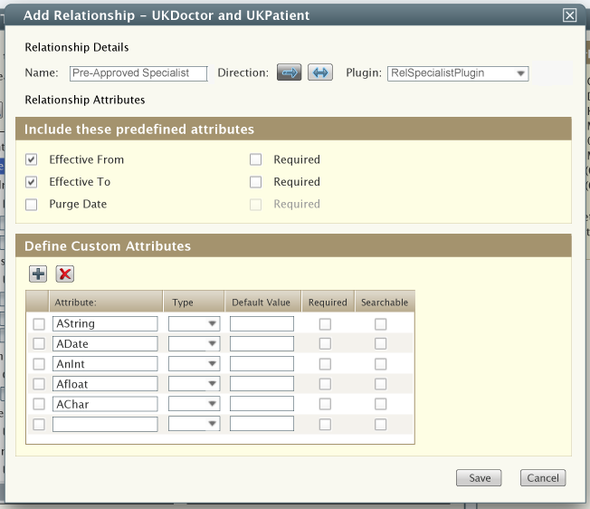

Look and Feel Guidelines
Guidelines
Spacing for the application should follow the following guidelines.
http://developers.sun.com/docs/web-app-guidelines/uispec4_0/E-pixel-layout.html
Shown
here is another screen that shows spacing between sections. This
is from an older version of the SWAED guidelines and is provided as an
additional layout sample.

Colors Guidelines - Main screen
The following shows font and color
guidelines for the Multi-Domain Manager as well as desired rounding
look for main functional areas.

Color Guidelines for Overlays

Guidelines for Pagination Controls
The pagination controls are the same as the SWAED Guidelines for tables.
The following shows the pagination controls by a table that displays four records at a time.

Tool tips for the Paginiation Controls
| Go to First Page |
| Go to Previous Page |
| Go to Next Page |
| Go to Last Page |
Example for a main screen
The following shows an
example screen of the Manage Relationship by Record screen using the
color, font and spacing guidelines.
Note: The real screen would also include the toggle between maintaining by relationship and maintaining by record.

Example of Overview Dialog
An example look of an overlay dialog.
Notice how ths uses a bold title for the major sections of the dialog (Relationship Details, and Relationship Attributes).

This page last
changed on 27-Oct-2008 11:37:00 PDT by andreakendall@dev.java.net